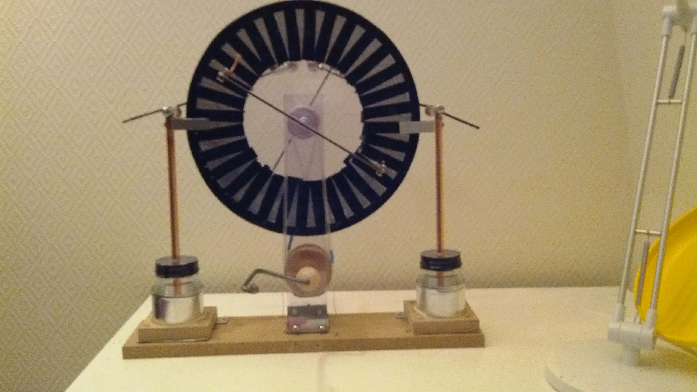

Wimshurst Machine
Back in 2013 I got really into classical electrostatic generators.
There is something so appealing about a hand-cranked high-voltage source.
As well as the early instrumentation, like the gold-leaf electroscope.
All of wich can be made from items at a hardware-store.
That was also where I got the poly-carbonate we see here.

It was cut with a 3D-printed circle cutting jig.(Had just made my first 3d printer)
In v.1 of the Wimshurst machine, I just wanted to se if I could get it working.
And so, was just cobbled together with bits laying around.
Foil-tape for the charge carrying-plates, PVC-tubing for the belt drives.
For the capasitors I just used some PVC pipes, lined inside and out with foil tape.
The brushes where made from solder-wick, and the combs from copper wire,
sharpened to a point, and soldered to the cover plate.
Most of the parts from v.1 was reused in v.2.
Now obviously I don't have video of v.2 in use. It was donated to the Physics pub
at UiB, but I belive someone took it. The only thing I know for certain,
is that I have no idea where it is.
Before i donated it, I did use it for some cool things.
It could drive an x-ray tube. As well as my home-made CO2-laser tube, at least
the two pulses the tube lasted.
I would love to make another wimshurst machine, but this time it's go BIG or go home.
I have my eye set on those round, 1m diameter, glass patio-tables.
When a matching pair has been found in the giva-away section,
it's time for v.3.